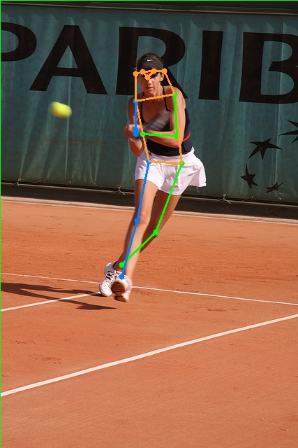
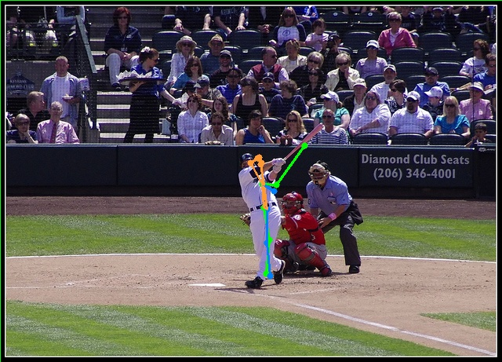
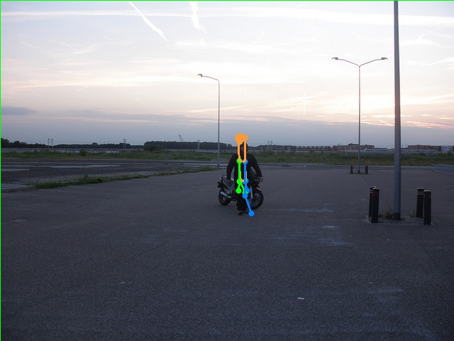

Human Pose Estimation
2025
Built a human pose estimation pipeline for understanding body keypoints and movement from visual data. You can add the model used, dataset, metrics, and what was novel or challenging about the implementation.





What to add
Add model architecture, training or inference pipeline, evaluation metric, and outcome.